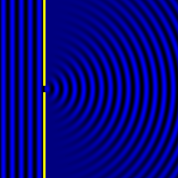
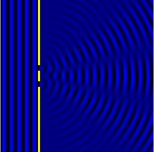

Βοηθητικά Βίντεο
Βίντεο 1: Από το κανάλι Domain of Science στο YouTube
Αναπαράσταση του πειράματος των σχισμών
 Διάσημα πειράματα της κβαντομηχανικής
Το πείραμα των 2 σχισμών
Το πείραμα των δύο σχισμών (γνωστό και ως πείραμα του Γιανγκ) είναι μια επίδειξη πως τα σωματίδια, είτε ύλης (π.χ. ηλεκτρόνια) είτε ηλεκτρομαγνητικής ακτινοβολίας (φωτόνια), εκδηλώνουν και σωματιδιακή και κυματική συμπεριφορά.[1]. Το πείραμα αυτό πραγματοποιήθηκε για πρώτη φορά από τον Άγγλο φυσικό Thomas Yang στις αρχές της δεκαετίας του 1800. Το πείραμα από τον Γιανγκ έγινε με φως και έπεισε, την εποχή εκείνη, πως η πρόταση του Ισαάκ Νεύτωνα ότι το φως είναι ρεύμα σωματιδίων, ήταν λανθασμένη.[2]. Έκτοτε το πείραμα επαναλήφθηκε με όλο και μεγαλύτερη λεπτομέρεια και παραλλαγές και δείχνει πλέον πως το φως εμφανίζει δύο φύσεις, και σωματιδιακή και κυματική, καθώς και ότι τα σωματίδια της ύλης εμφανίζουν κι αυτά κυματικές ιδιότητες.
Στο πείραμα αυτό, κατά το οποίο τα σωματίδια αναγκάζονται να περάσουν μέσα από μια διάταξη με δύο λεπτές παράλληλες σχισμές που είναι πολύ κοντά η μία στην άλλη, παίζει σημαντικό ρόλο η παρατήρηση. Στην προσπάθειά του παρατηρητή να δει από ποια σχισμή περνά το κάθε σωματίδιο, αλλοιώνεται η συμπεριφορά που αυτά εμφανίζουν σε σχέση με όταν δεν τα παρατηρεί. Η προσπάθεια παρατήρησης τα κάνει να εκδηλώνουν ιδιότητες σωματιδίου ενώ όταν δεν τα παρατηρεί εμφανίζουν κυματικές ιδιότητες.[2]
Υπάρχουν διάφορες εκδοχές για το τι ακριβώς συμβαίνει όταν το σωματίδιο διέρχεται από τη διάταξη των δύο σχισμών. Η ερμηνεία της σχολής της Κοπενχάγης είναι πως δεν οφείλει κανείς να εξηγήσει τι ακριβώς συμβαίνει στο επίμαχο μέρος της πειραματικής διάταξης αρκει να δεχτούμε πως απλώς συμβαίνει σύμφωνα με τον μαθηματικό φορμαλισμό που περιγράφει με επιτυχία το σύστημα.[2]
Το 2002, η έκδοση του πειράματος των δύο σχισμών του Jönsson, με ηλεκτρόνια, ψηφίστηκε ως το πιο όμορφο πείραμα Φυσικής όλων των εποχών από τους αναγνώστες του Physics World.
Ένα πολύ ενδιαφέρον documentation για το πείραμα των σχισμών από τους καθηγητές Μήτσου – Βαµβακά – Ζέκου
Βίντεο 2: Από το κανάλι Καθημερινή Φυσική στο YouTube
Η γάτα του Σρέντιγκερ
Η γάτα του Σρέντινγκερ είναι ένα νοητικό πείραμα, που χαρακτηρίζεται και ως παράδοξο, επινοήθηκε από τον Αυστριακό φυσικό Έρβιν Σρέντινγκερ (Erwin Schrödinger) το 1935. Αναπαριστά αυτό που είδε ως το πρόβλημα στην ερμηνεία της Κοπεγχάγης για την κβαντομηχανική στην εφαρμογή της σε καθημερινά αντικείμενα. Το σενάριο παρουσιάζει μια γάτα, η οποία μπορεί να είναι ταυτόχρονα ζωντανή και νεκρή, με την κατάστασή της να συνδέεται με προηγούμενο τυχαίο γεγονός. Το νοητικό πείραμα συναντάται συνήθως σε θεωρητικές συζητήσεις για τις ερμηνείες της κβαντομηχανικής. Κατά την ανάπτυξη αυτού του πειράματος ο Σρέντινγκερ επινόησε τον όρο κβαντική διεμπλοκή.
Σύμφωνα με τον Σρέντινγκερ:
Κάποιος μπορεί να κατασκευάσει αρκετά γελοίες περιπτώσεις. Μια γάτα κλειδώνεται σε ένα ατσάλινο θάλαμο, μαζί με την εξής διάταξη (η οποία βρίσκεται με ασφάλεια εκτός εμβέλειας της γάτας): σε έναν μετρητή γκάιγκερ υπάρχει μια ελάχιστη ποσότητα ραδιενεργής ουσίας, τόσο μικρής, που κατά τη διάρκεια μιας ώρας ένα από τα άτομα διασπάται, αλλά επίσης ισοπίθανα, ίσως και όχι. Αν συμβεί αυτό ο μετρητής ενεργοποιείται και μέσω ενός διακόπτη (ρελέ) απελευθερώνει ένα σφυρί που σπάει μια μικρή φιάλη με υδροκυάνιο. Αν κάποιος αφήσει αυτό το σύστημα μόνο του για μια ώρα, μπορεί να υποθέσει ότι η γάτα είναι ακόμα ζωντανή, εάν στο μεταξύ δεν έχει διασπαστεί κάποιο άτομο. Η κυματοσυνάρτηση του συστήματος μπορεί να το εκφράσει, αν υπάρχει σε αυτή και η ζωντανή και η νεκρή γάτα (συγχωρήστε μου την έκφραση) αναμεμιγμένες ή διάχυτες εξίσου.
Κλασικά τέτοιες περιπτώσεις απροσδιοριστίας αρχικά περιορισμένες στο ατομικό επίπεδο, μετασχηματίζονται σε μακροσκοπικές απροσδιοριστίες, οι οποίες μπορούν να επιλυθούν με απευθείας παρατήρηση. Αυτό μας εμποδίζει από το να δεχτούμε έτσι αφελώς ένα "θολό μοντέλο" που αναπαριστά την πραγματικότητα. Από μόνο του δεν συμπεριλαμβάνει τίποτα ασαφές ή αντιφατικό. Υπάρχει διαφορά μεταξύ μιας κουνημένης και "out-of-focus" φωτογραφίας και μεταξύ ενός στιγμιότυπου σύννεφων και ομίχλης.
Βίντεο 3: Από το κανάλι Καθημερινή Φυσική στο YouTube
Το περίφημο νοητικό πείραμα του Σρέντινγκερ θέτει το ερώτημα, "πότε ένα κβαντικό σύστημα σταματάει να υπάρχει σε μια κβαντική υπέρθεση καταστάσεων και γίνεται το ένα ή το άλλο;" (Πιο τεχνικά, πότε μια πραγματικά κβαντική κατάσταση σταματά να είναι γραμμικός συνδυασμός καταστάσεων, που παριστούν διαφορετικές κλασικές καταστάσεις και αντ' αυτού αρχίζει να έχει μοναδική κλασική συμπεριφορά;) Αν η γάτα επιζεί, θυμάται μόνο ότι ήταν ζωντανή. Αλλά επεξηγήσεις του παράδοξου EPR που είναι συνεπείς με την κλασική μικροσκοπική κβαντομηχανική απαιτούν ότι μακροσκοπικά αντικείμενα, όπως οι γάτες και οι φορητοί υπολογιστές, δεν έχουν πάντα μοναδική κλασική περιγραφή. Το νοητικό πείραμα απεικονίζει αυτό το φαινομενικό παράδοξο. Η διαίσθησή μας προστάζει ότι κανένας παρατηρητής δε μπορεί να βρίσκεται σε μίξη καταστάσεων, όμως η γάτα, όπως φαίνεται από το νοητικό πείραμα, μπορεί να είναι αυτή η μίξη. Χρειάζεται η γάτα να γίνει παρατηρητής, ή από μόνη της η ύπαρξη σε μια καλά καθορισμένη κλασική κατάσταση απαιτεί κάποιον εξωτερικό παρατηρητή; Κάθε εναλλακτική λύση φαίνεται παράλογη για τον Άλμπερτ Αϊνστάιν, ο οποίος εντυπωσιάστηκε από την ικανότητα του νοητικού πειράματος να τονίζει αυτά τα θέματα. Σε γράμμα του προς τον Σρέντινγκερ το 1950, έγραψε:
Είσαι ο μοναδικός σύγχρονος φυσικός, πέραν του Λάουε, ο οποίος μπορεί να δει ότι κάποιος δε μπορεί απλά να προσπεράσει την υπόθεση της πραγματικότητας, αν θέλει είναι ειλικρινής. Οι περισσότεροι δε βλέπουν το επικίνδυνο παιχνίδι που παίζουν με την πραγματικότητα-πραγματικότητα ως κάτι ανεξάρτητο από αυτό που είναι πειραματικά καθιερωμένο. Η ερμηνεία τους, ωστόσο, αντικρούεται τόσο κομψά από το δικό σου σύστημα του ραδιενεργού ατόμου + ενισχυτή + πυρίτιδα + γάτα στο κουτί, στο οποίο η κυματοσυνάρτηση του συστήματος περιέχει και την ζωντανή γάτα και την κομματιασμένη. Κανένας δε μπορεί να αμφιβάλει ότι η παρουσία ή απουσία της γάτας, είναι κάτι ανεξάρτητο της πράξης του παρατηρητή.Αίσθηση προκαλεί το γεγονός ότι η πυρίτιδα δεν αναφέρεται στον μηχανισμό του Σρέντινγκερ, ο οποίος χρησιμοποιεί μετρητή Γκάιγκερ ως ενισχυτή και υδροκυάνιο ως πυρίτιδα. Η πυρίτιδα αναφέρθηκε στην αρχική υπόθεση του Σρέντινγκερ 15 χρόνια νωρίτερα και προφανώς ο Αϊνστάιν το συνέχισε στην τωρινή συζήτηση. Θα πρέπει να σημειωθεί ότι ο Αϊνστάιν όχι μόνο ποτέ δεν συμπάθησε την κβαντική μηχανική αλλά βάσει των πειραματικών αποδείξεων του θεωρήματος του Μπελ[4] (John Stewart Bell) η άποψη του Αϊνστάιν περί κβαντικής σύμπλεξης αποδείχθηκε θεμελιωδώς λάθος.
Back to top